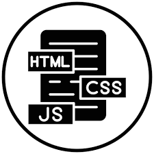

Web Development
HTML creates the structure of web pages, defining their content. CSS styles and controls the visual appearance of HTML elements. JavaScript adds interactivity by enabling dynamic content modifications and user interactions, forming the foundation of modern websites.
Python
Python is interesting in IT due to its simplicity, versatility, and large developer community, making it an ideal programming language for a wide range of applications, from data science to web development.
Linux
Linux is fundamental in IT due to its stability, security, and open-source nature, providing a powerful and customizable operating system for a variety of applications and IT needs.